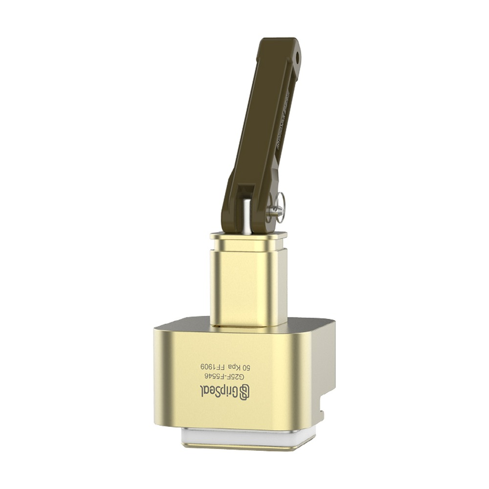
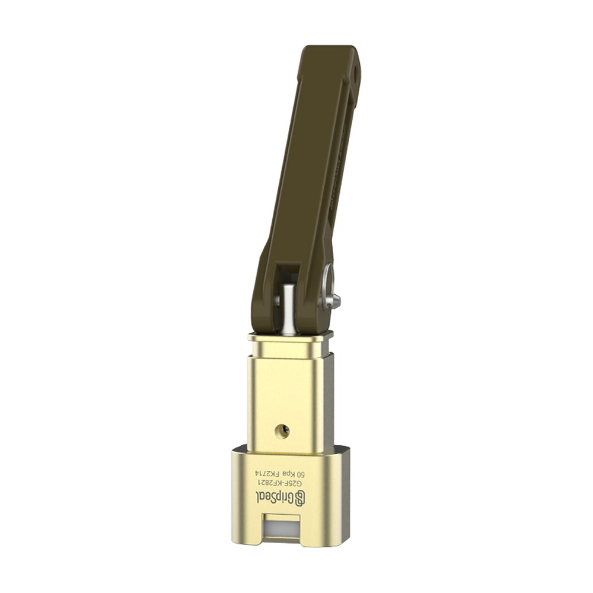
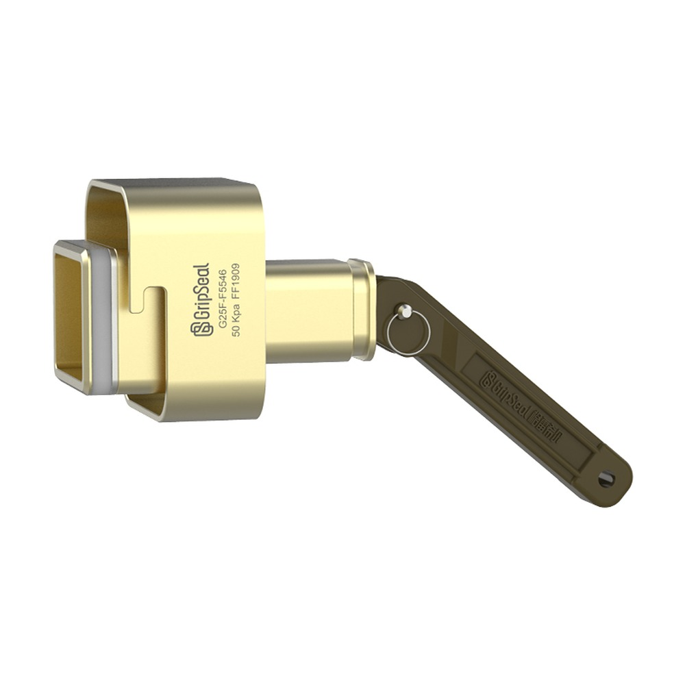
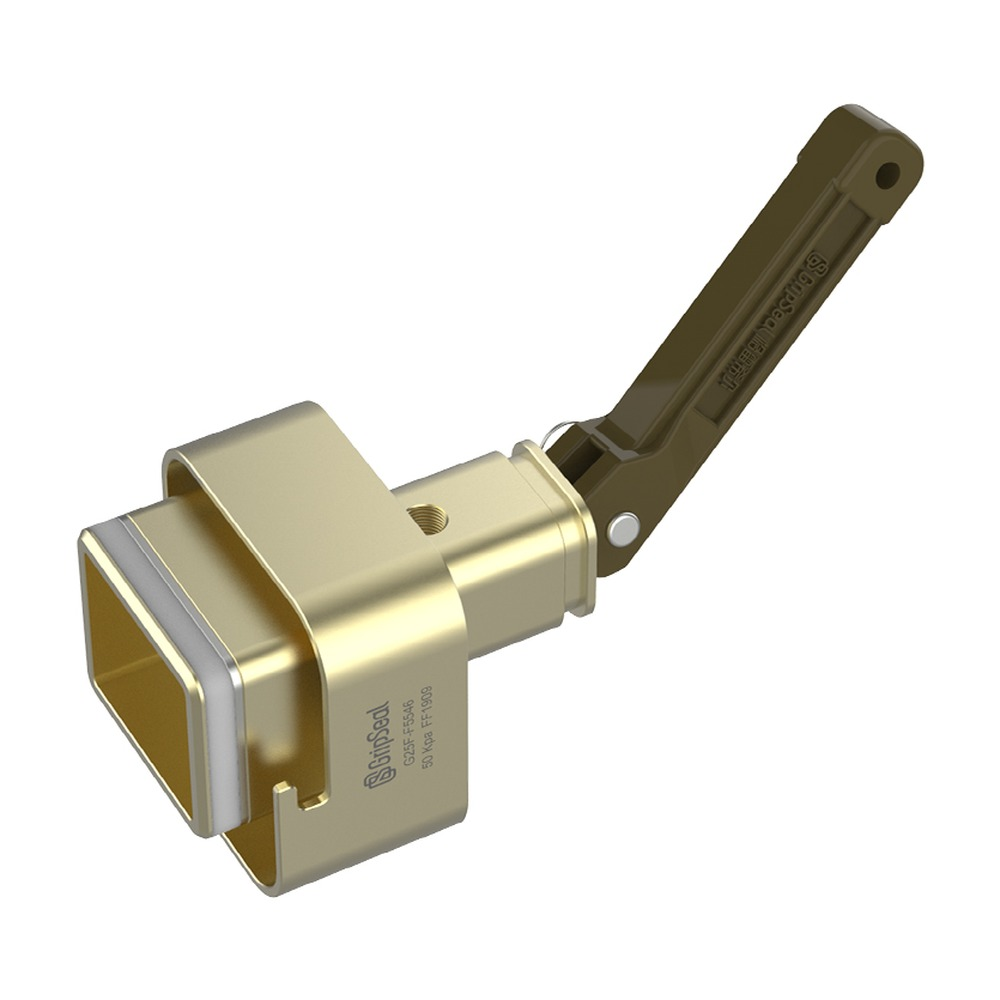

推荐 产品
相关系列对比
在确定最终型号前，可先对比同类别内的相邻系列。
针对电气接口孔做内胀密封，用于 EV 电池包、电机控制器等部件在产线与下线环节的低压检漏测试，含 DK / DJ / T / JP 四种结构变体。



G25F 为电连接器测试用快速密封连接器：插入电连接器后，通过内胀密封其接口孔，并配合滑套锁定与翻折手柄实现快速连接；适用于电池包、电机控制器等电气部件的压力与泄漏测试。
适用于需要快速连接、重复密封和稳定测试节拍的电连接器低压检漏工位。
| 系列 / 类型 | 电连接器测试快速密封连接器（内胀密封电气接口孔） |
|---|---|
| 最高工作压力 | 真空 – 30 kPa（典型测试压力）；按子系列本体额定可达 500 kPa |
| 密封对象 | 电连接器接口孔（按内长 A × 内宽 B 选型） |
| 流路接口 | M5 / BSPP 1/8"（按子系列） |
| 连接方式 | 滑套锁定 + 翻折手柄（sliding sleeve lock & fold-down handle） |
| 主体材质 | 铝合金（壳体亦可 POM / 玻纤尼龙 / 树脂） |
| 密封材质 | 氯丁橡胶（Neoprene）/ 硅胶（Silicone） |
| 工作温度 | -20 °C ~ +120 °C |

针对电气接口孔做内胀密封，适配 EV 电池包、电机控制器等部件在产线与下线环节的检漏。
DK 大电流插针 / DJ 大电流夹爪 / T 探针式 / JP 小电流夹爪，覆盖不同电连接器结构。
铝合金主体，可选 POM / 玻纤尼龙 / 树脂，轻量且适配不同产线环境。
主密封包可更换（含数次更换用量），降低维护与停机成本。
| 子系列 | 结构 / 适用 | 接口 | 最大压力 | 示例型号 |
|---|---|---|---|---|
| G25F-DK | 大电流插针型（方形多针 / 单针圆头） | BSPP 1/8" | 500 kPa | G25F-DK048295R9.9 / G25F-DK-C4616020C |
| G25F-DJ | 大电流夹爪型（锯齿 / 耳型电插座） | M5 | 50 kPa | G25F-DJ27027853R.4 / G25F-DJ58597558R.8 |
| G25F-T | 探针型（按孔径 / 孔数适配） | MS / BSPP 1/8" | 50 kPa | G25F-T320260R8 / G25F-T791462R0.7 |
| G25F-JP | 小电流夹爪型 | M5 / 1/4" | 50 kPa / 150 PSI | G25F-JP28152819R.6 / G25F-JP45323120R.6 |
该系列广泛用于电连接器与电力电子部件在产线、下线及售后环节的低压密封与泄漏测试。
对电池包电气接口做快速密封与低压检漏，支持批量下线检测。
适配电机控制器等电力电子部件的电连接器接口密封与泄漏测试。
针对各类电连接器的接口孔做内胀密封，仅密封、便于重复操作。
滑套锁定 + 翻折手柄设计，适配高节拍产线与自动化工装集成。
在确定最终型号前，可先对比同类别内的相邻系列。